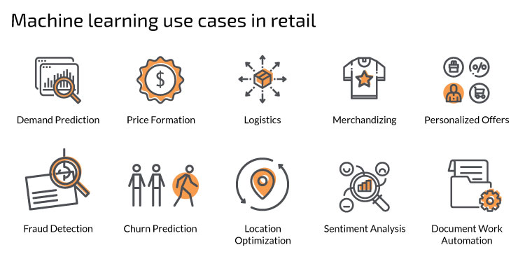

Introduction
In today’s digital landscape dominated by e-commerce giants such as Amazon, the analysis of retail product data assumes paramount importance as a means to unravel the intricacies of consumer behavior, and unveil the complex relationships that exist between various products. The topic of this project poses a fundamental assertion: that mining the vast repository of Amazon’s retail product data holds the key to unlocking invaluable insights that can revolutionize marketing strategies, inform product development, and optimize overall business operations. This assertion underscores the critical role of data analytics in shaping the success trajectory of businesses operating in the contemporary marketplace. By delving into the granular details of consumer interactions with products on Amazon’s platform, stakeholders gain not only a deeper understanding of consumer preferences but also a nuanced perspective on the dynamics of the digital marketplace itself. The implications of this analysis extend far beyond mere academic curiosity; they are deeply intertwined with the strategic imperatives of businesses seeking to thrive amidst fierce competition and rapid technological advancements. The significance of analyzing Amazon retail product data transcends individual businesses, permeating into the realms of consumer behavior, marketing efficacy, policymaking, and academic research.
At its core, this endeavor resonates with a diverse array of stakeholders, each with a vested interest in deciphering the underlying patterns shaping modern consumption patterns and economic dynamics. Consumers, for instance, stand to benefit from the insights gleaned through data analysis, which can translate into more personalized shopping experiences, enhanced product recommendations, and greater transparency within the marketplace. Much work has been done, for example, to improve search engine results and product classification for recommendation purposes (Medini et al. 2019; Smith and Linden 2017). Marketers, on the other hand, find in this data a treasure trove of actionable intelligence, enabling them to fine-tune advertising strategies, optimize pricing models, and anticipate shifts in consumer preferences with a heightened degree of accuracy (Chen, Mislove, and Wilson 2016; Chevalier and Goolsbee 2003). Furthermore, researchers across various disciplines are drawn to the rich dataset offered by Amazon, utilizing sophisticated analytical techniques ranging from machine learning algorithms to traditional statistical methods to unravel the complexities of consumer behavior and product relationships (Shaikh, Rathi, and Janrao 2017; Bell and Bala 2015). Despite the considerable strides made in this field, there remains an abundance of untapped potential, beckoning further exploration and innovation to fully harness the transformative power of Amazon’s retail product data.

In this project, machine learning methods play a pivotal role in extracting meaningful insights from the vast sea of Amazon’s retail product data. Techniques such as Principal Component Analysis (PCA) enable dimensionality reduction, allowing for the identification of key features influencing consumer behavior. Clustering algorithms group similar products or consumers together, facilitating targeted marketing strategies and personalized recommendations. Neural networks, with their ability to learn intricate patterns, offer valuable predictive capabilities, aiding in demand forecasting and inventory management. Regression analysis uncovers relationships between variables, potentially helping businesses understand the impact of pricing, promotions, and other factors on sales. Support Vector Machines (SVM), Naive Bayes, and decision trees provide additional tools for classification and prediction tasks, enriching the analytical toolkit available to researchers and practitioners alike. Through the application of these advanced methodologies, one can navigate the complexities of the digital marketplace, leveraging data-driven insights to drive innovation and strategic decision-making.
To get specific, the way that machine learning will be used is in both supervised and unsupervised learning settings depends on the data present within this dataset. For unsupervised learning methods, much can be done with the text data (aka the title of the product and the categories); one can do embeddings, bag-of-words, or other methods that reduce text into a couple of meaningful tags/individual words. One can also do dimension reduction and clustering in unsupervised contexts, as there are plently of numerical features in the data (number of reviews, number of stars, price, etc). For supervised learning, the feature used for label could be the feature of “Is Best Seller”, which would give a binary label; or, for regression and numerical/continuous labeling, the feature “Price” could be used as it is an important feature to learn about and could potentially be predicted from the other features present. For both supervised and unsupervised learning, it is recognized that some features are essentially useless or not needed; those would be the unique strings for each product row, namely “ASIN”, “Image URL”, and “URL”. These are important info for getting context for the product (and potentially for aquiring new data in the form of image data), but not necessary for the techniques performed on this site as no computer vision methods will be used.
In addition to the techniques mentioned, reinforcement learning models can also be employed to optimize strategies in response to changing market dynamics. By simulating different scenarios and learning from interactions, these models can adapt and refine decision-making processes over time, enhancing business agility and resilience. Moreover, natural language processing (NLP) techniques can extract sentiment analysis from customer reviews, providing valuable insights into product perception and sentiment trends that influence purchasing decisions. The integration of these advanced methodologies into the analysis of Amazon’s retail product data signifies a holistic approach to understanding consumer behavior and market trends, empowering businesses to stay ahead in an ever-evolving digital landscape.
Questions to Answer
- Is there noticable trends in prices over time, over all products?
- Are there price trends over time within a specific product category?
- Is there any meaningful similarities in the images between products with similar descriptions?
- Are there price/rating similarities between the products with similar images?
- Do ratings have any correlation with the price of products?
- Do ratings have any correlation with the product category?
- Can the price of a product be predicted based on all other factors?
- Can the rating of a product be predicted based on all other factors?
- Can the category of a product be predicted based on the description?
- Is the description of a product similar to the generated description based on the product image (or the generated bag of words, tags, etc)?